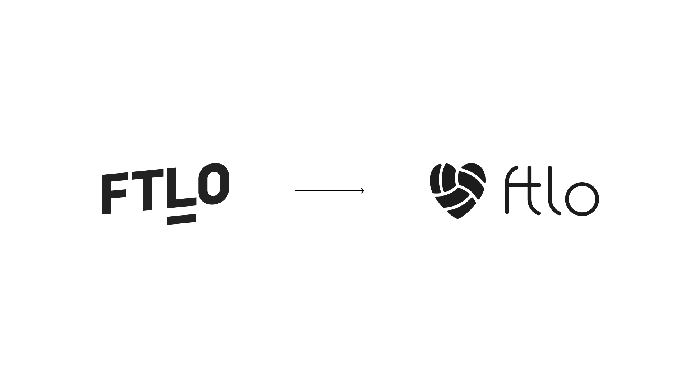
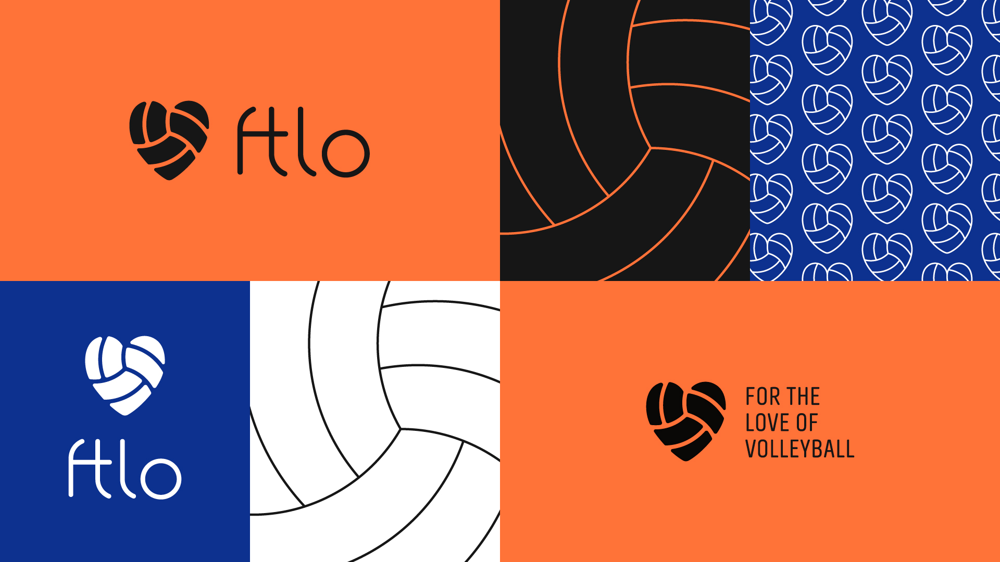
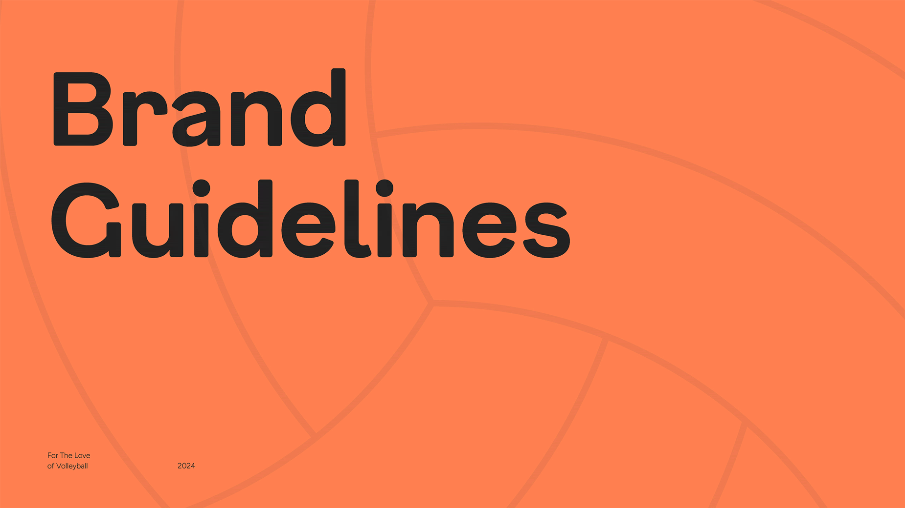
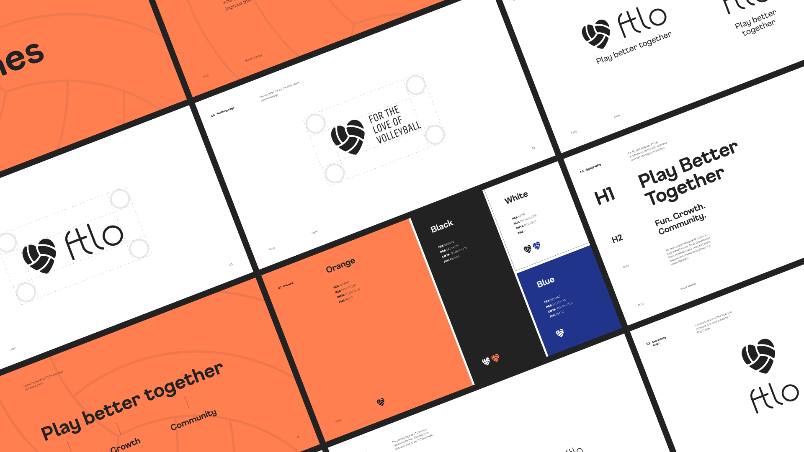
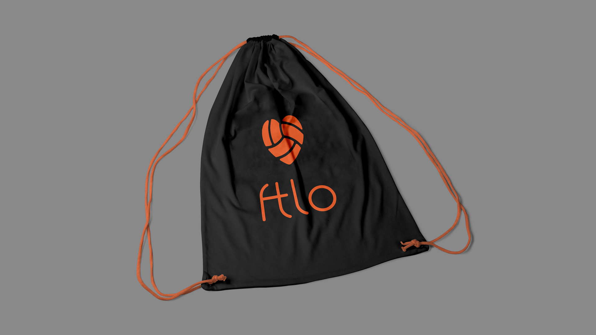
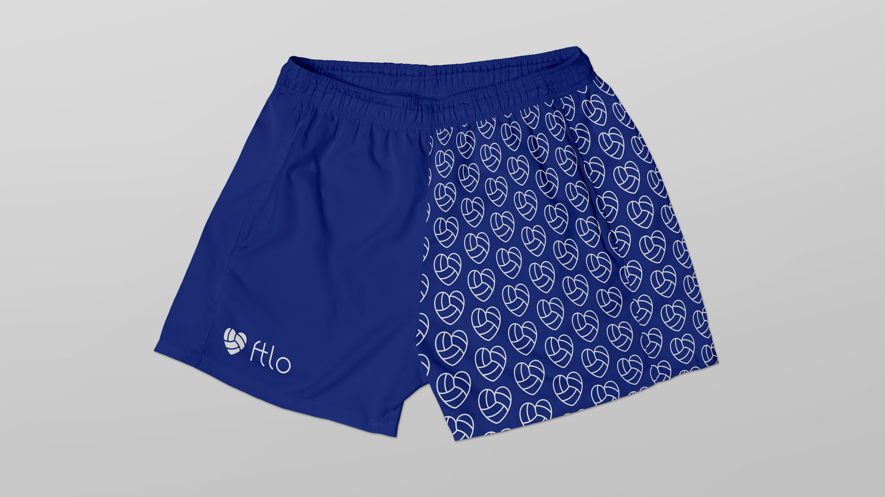
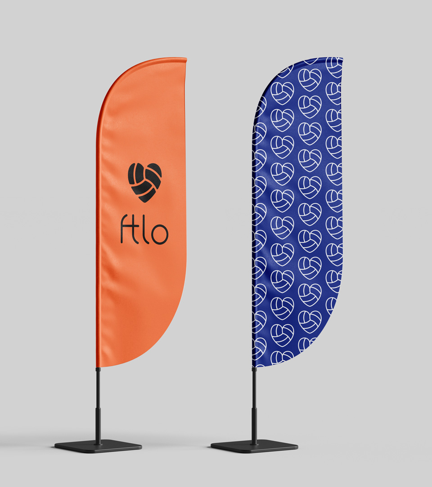
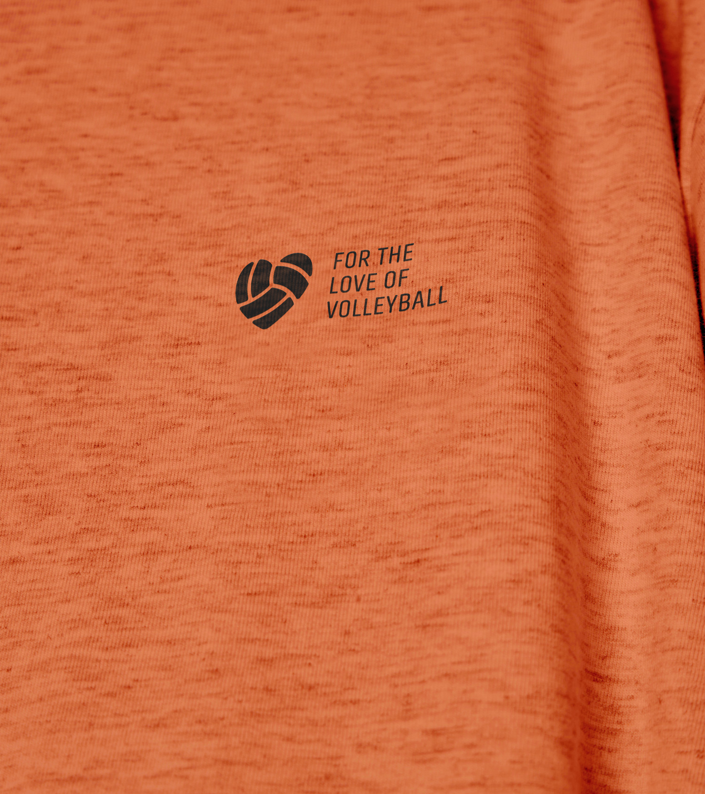
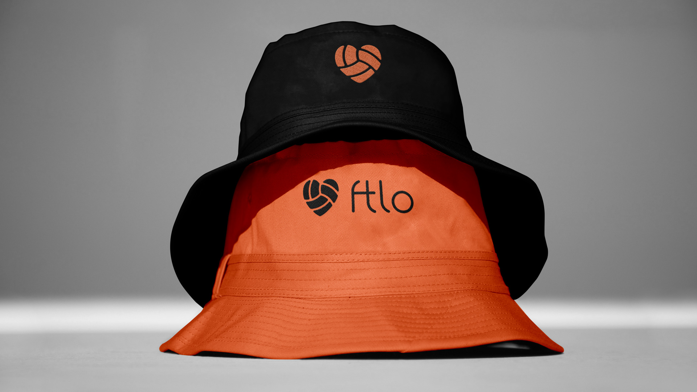
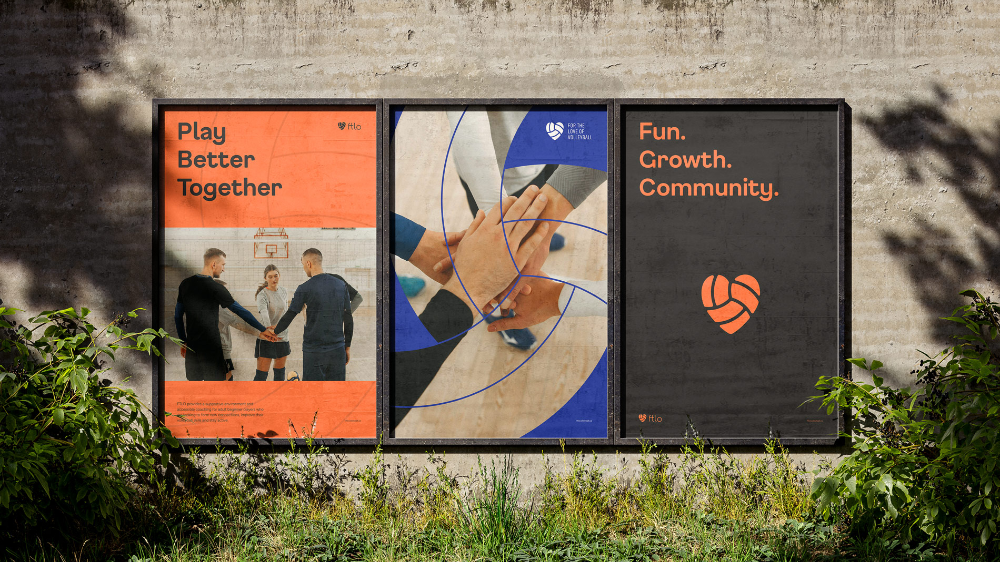

Ftlo
Branding
Ftlo (For the Love of Volleyball) is a non-profit organization that provides group volleyball coaching for adults of all ages in the Lower Mainland who are new to volleyball, looking for an inclusive social community, and ways to stay active. This project aims to refresh the brand and visual identity of Ftlo to make it more distinct, and better connect with the audience emotionally. The current logo doesn't embody the two most important things in Ftlo: volleyball and community.
Mentor
Recognition
Applied Arts Student Awards, Logo Applications - Single, 2026

A heart/volleyball icon connects volleyball and community to the brand, which the previous logo was missing.








